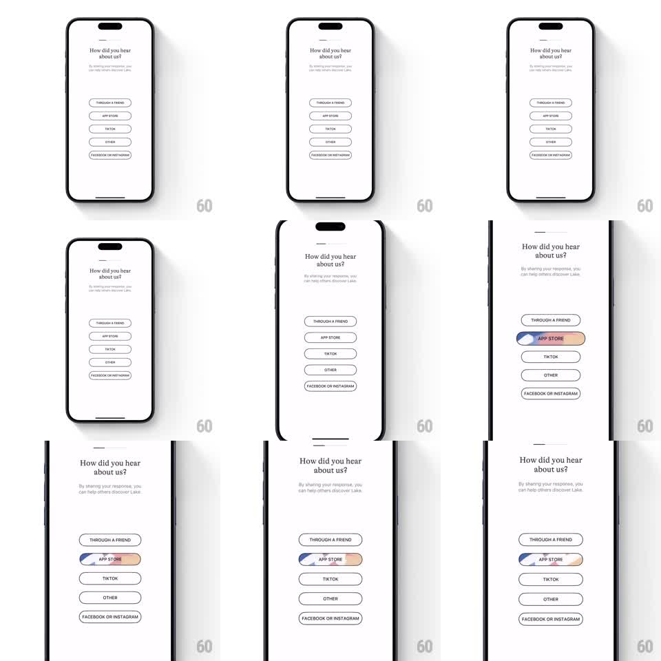

Media
Frame-by-frame

Rebuild this interaction 1:1: Lake's onboarding survey - a vertical list of outlined pill buttons where the tapped pill fills with a hand-drawn scribble texture that sweeps across, leaving a crayon-like multicolor mark behind the label.

Rebuild this interaction 1:1: Lake's onboarding survey - a vertical list of outlined pill buttons where the tapped pill fills with a hand-drawn scribble texture that sweeps across, leaving a crayon-like multicolor mark behind the label. ## Integration Integration: stack-agnostic spec - springs given as stiffness/damping, timed motions as duration + curve; map every value to your framework and animation library of choice. ## Scene White screen, serif question "How did you hear about us?" with helper line, then a stack of pill-shaped outlined buttons (Through a friend, App Store, TikTok, Other, Facebook or Instagram), 1px black border, transparent fill, uppercase small labels. ## Motion spec Pattern: tap feedback with texture sweep. - On tap: a scribble mark - layered diagonal crayon strokes in muted blue, purple, and peach - sweeps into the pill from left to right (~400ms, ease-out), overspilling the pill's left and right edges slightly. - Strokes build with a tiny internal stagger (~40ms apart) so it reads as drawn, not revealed. - Pill border and label stay put; label stays legible over the texture. - Selection persists; other pills unchanged. ## Calibration - The scribble must break the pill's clean outline - contained fills lose the hand-drawn character. - Keep stroke edges rough (crayon texture), not solid vector blocks. ## Reduced motion Pill fills with a flat soft tint (120ms fade), label inverts for contrast. ## Don't miss - Multicolor scribble (blue/purple/peach together), not a single brand color. - Sweep direction is horizontal along the pill; the mark is wider than the pill itself.